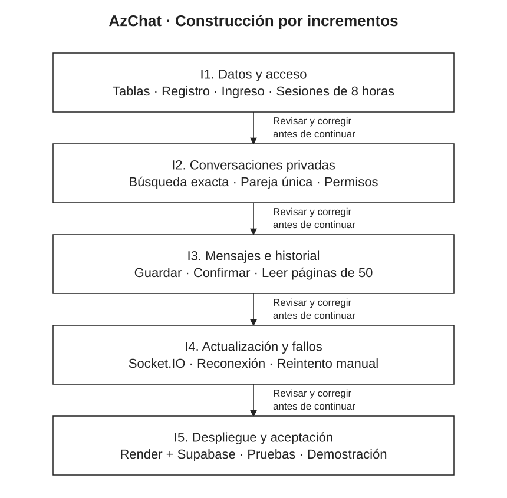

En pocas palabras
La construcción se organiza en cinco entregas: acceso, conversaciones, mensajes, comunicación en directo y comprobación final.
- Cada entrega se revisará antes de continuar con la siguiente.
- La meta de 30 personas conectadas se comprobará durante la construcción.
Vista del modelo

Seleccione la imagen para verla a tamaño completo.
Ver explicación y detalles del paso
Propósito y resultado previsto
Este documento reúne las decisiones de diseño y organiza la etapa de construcción. La primera versión de AzChat permitirá registrarse, ingresar con usuario o código y conversar en privado mediante texto, con historial conservado. Se utilizará inicialmente con hasta 4 personas y se comprobará una capacidad de 30 conectadas.
La planificación P1–P12 queda documentada. El prototipo de P10 demuestra la navegación con datos ficticios; el servidor, la persistencia y la comunicación entre cuentas reales corresponden a la construcción que se organiza a continuación.
Diseño que se construirá
| Elemento | Diseño acordado |
|---|---|
| Interfaz | HTML, CSS y JavaScript, siguiendo P10: tonos grafito y azul, paneles rectangulares unidos, lista y chat en escritorio, una vista a la vez en celular. Enter envía y Shift + Enter agrega una línea. |
| Servidor | Un único proceso Node.js con Express entrega la web y la API. Socket.IO comunica los mensajes ya guardados. Los componentes y las rutas están definidos en P8. |
| Datos y acceso | PostgreSQL en Supabase con las cuatro tablas de P11. Argon2id protege las contraseñas; express-session y connect-pg-simple administran sesiones de 8 horas. |
| Alojamiento | Una instancia en Render para la web y el servidor, con la base separada en Supabase. Se acepta el arranque tras inactividad de la modalidad gratuita. GitHub Pages aloja la documentación y el prototipo. |
| Alcance | Chats privados de texto, búsqueda exacta, una conversación por pareja y mensajes de hasta 1000 caracteres. Se conserva el historial; no se incluyen edición, borrado, recuperación de contraseña, grupos, archivos, audios, llamadas ni administrador. |
Organización de la construcción
La metodología Ágil se aplica mediante cinco incrementos. Cada uno termina con una demostración, una revisión de sus pruebas y la corrección de los problemas encontrados. El siguiente incremento utiliza la entrega anterior ya revisada.
Modelo editable: Plan_construccion_AzChat.drawio. Puede abrirse en Draw.io mediante Archivo → Abrir desde → Dispositivo.
| Incremento | Trabajo y resultado comprobable |
|---|---|
| I1. Datos y acceso | Crear el esquema y las tablas de P11. Preparar conexión, registro, hash, ingreso y cierre de sesión. Configurar el vencimiento absoluto y las cookies. Cierre: dos cuentas distintas ingresan con usuario o código; se rechazan datos inválidos y duplicados; el acceso vencido o cerrado no autoriza peticiones. CA-01 a CA-04 y parte de CA-12. |
| I2. Conversaciones privadas | Conectar la búsqueda exacta, la lista propia y la apertura de la pareja única. Aplicar los permisos de lectura y escritura. Cierre: A y B abren el mismo chat, incluso al crearlo simultáneamente; C no puede acceder. CA-05, CA-06 y la parte HTTP de CA-10. |
| I3. Mensajes e historial | Guardar mensajes válidos, confirmar después de guardar y consultar páginas de 50. Incorporar el emisor y la hora; mostrar el texto sin ejecutarlo. Cierre: los mensajes permanecen al salir, volver a entrar y reiniciar el proceso; las páginas no repiten ni omiten registros del historial de prueba. CA-07, CA-09, CA-12 y parte de CA-08. |
| I4. Actualización y fallos | Integrar Socket.IO con la misma sesión; actualizar solo a los participantes. Conservar el borrador y el idEnvio al fallar; reintentar únicamente al pulsar el botón. Cierre: ambos navegadores reciben una sola copia, la reconexión recupera el historial y cerrar o vencer la sesión corta sus canales. CA-08, CA-10, CA-11 y la parte en directo de CA-04. |
| I5. Despliegue y aceptación | Publicar la aplicación en Render, conectarla a Supabase y ejecutar todos los criterios de P5. Revisar celular, teclado, permisos, conservación y capacidad. Cierre: todos los CA-01 a CA-14 cuentan con evidencia y se demuestra el chat desde dos navegadores distintos. |
Archivos previstos
La construcción mantendrá la documentación separada del código. La siguiente estructura concreta los módulos de P8; es una organización prevista, no un inventario de una aplicación ya implementada.
AzChat/
Documentacion/ Documentos P1 a P12 y prototipo
source/
servidor.js Express, rutas y Socket.IO
acceso.js Registro, contraseñas y sesiones
chat.js Conversaciones, permisos y mensajes
datos.js Conexión y consultas PostgreSQL
base.sql Definición de las tablas de P11
publico/
index.html Interfaz de la aplicación
estilos.css
app.js
pruebas/ Pruebas de la construcción
package.json Inicio y dependencias
package-lock.json Versiones instaladas
.env.example Nombres de variables, sin secretosLas dependencias principales serán Express, Socket.IO, pg, argon2, express-session y connect-pg-simple. Se fijarán versiones compatibles y se conservará el archivo de bloqueo. El inicio se preparará como npm start, ejecutando node source/servidor.js. Esos comandos serán utilizables cuando exista la aplicación.
Relación entre requisitos, diseño y pruebas
| Necesidad | Referencias y evidencia prevista |
|---|---|
| Cuenta y acceso | RF-01, RF-02, RNF-07; CU-01, CU-02, CU-08. ServicioAcceso; usuarios y sesiones; pantallas de ingreso y registro. I1: CA-01 a CA-04, CA-12. |
| Buscar, abrir y listar | RF-04, RF-07; CU-03, CU-04. ServicioChat; usuarios y conversaciones; búsqueda y lista de P10. I2: CA-05 y CA-06. |
| Enviar, recibir e identificar | RF-03, RF-05, RF-06, RNF-04; CU-05, CU-06. ClienteChat, ServidorChat y ServicioChat; mensajes; historial y escritura. I3–I4: CA-07 y CA-08. |
| Conservar y recuperar | RF-08, RF-09, RNF-05, RNF-06; CU-05, CU-06, CU-07. AccesoDatos y ServicioChat; mensajes e idEnvio; historial, estado y Reintentar. I3–I4: CA-09, CA-11 y CA-12. |
| Privacidad | RNF-03, RNF-07. Sesión, permisos en cada operación y canales asignados por el servidor. I1–I4: CA-04, CA-10 y CA-12. |
| Uso y capacidad | RNF-01, RNF-02. Vistas de P10 y arquitectura de P9. I5: CA-13 y CA-14. |
Pruebas de aceptación
La referencia completa es P5, criterios CA-01 a CA-14. Cada prueba registrará la versión, el entorno, los pasos, el resultado esperado, el resultado obtenido y una evidencia breve. Una prueba pendiente no se marcará como aprobada.
- Datos: comprobar claves, duplicados, pareja inversa, intento repetido y límites de texto. Probar también peticiones que omitan la validación de la interfaz.
- Privacidad: usar A y B como pareja y C como cuenta ajena. C no puede leer, escribir ni recibir eventos del chat A–B. Las respuestas no muestran datos privados del registro.
- Persistencia: enviar mientras B está desconectado, volver a entrar, reiniciar el servidor y consultar más de 50 mensajes. El historial confirmado permanece disponible. Intercalar guardados simultáneos y consultas para detectar mensajes que se confirmen fuera del orden de sus identificadores; corregir la recuperación si aparece alguna omisión.
- Fallos: interrumpir antes y después del guardado, incluida la pérdida de confirmación. La recuperación de conexión no envía borradores; el reintento manual conserva un solo registro. Reutilizar idEnvio con otro texto o chat se rechaza.
- Sesiones: comprobar salida y vencimiento absoluto con peticiones y conexiones en directo. Se simulará el tiempo en un entorno de prueba para verificar las 8 horas sin esperar ese plazo.
- Interfaz: comprobar computadora, celular, teclado, Enter y Shift + Enter. Diferenciar las pruebas del prototipo local de las pruebas de la aplicación conectada al servidor.
Escenario de 30 usuarios
Con el servidor activo y conexión estable, 30 usuarios forman 15 parejas. Durante 2 minutos, cada usuario envía un texto cada 10 segundos, según CA-13. Cada mensaje debe aparecer en el destinatario en un máximo de 3 segundos desde la acción de enviar, sin pérdida ni duplicación de mensajes confirmados.
La herramienta de prueba registrará los instantes de envío y visualización con una referencia de tiempo común, además de los identificadores para comprobar la correspondencia con la base. Las conexiones simuladas servirán para medir carga; la demostración funcional se hará además desde dos navegadores distintos. El arranque inicial del alojamiento gratuito se registra por separado.
Preparación y despliegue
- Preparar las cuentas de Render y Supabase y elegir sus configuraciones gratuitas para la demostración. Confirmar sus condiciones al momento de desplegar.
- Crear el esquema privado azchat y un rol de conexión con permisos limitados. Revisar que las tablas no estén expuestas por la Data API. Mantener una copia exportada de los datos de prueba y comprobar su restauración antes de la demostración.
- Configurar en Render
DATABASE_URL,SESSION_SECRETyAPP_URL. Utilizar elPORTque proporcione el alojamiento y el mismo grupo inicial de hasta 5 conexiones para datos y sesiones. - Publicar una sola aplicación con su interfaz y servidor en el mismo origen HTTPS. Configurar cookies seguras, comprobación del origen, límite de intentos de acceso y autorización de los canales.
- Crear cuentas ficticias de prueba, ejecutar la aceptación y registrar la dirección real de la aplicación. Las credenciales se mantienen en las variables del servidor; el repositorio conserva solo sus nombres en .env.example.
Revisión del equipo y cierre de planificación
El equipo organizará las tareas de cada incremento en una lista sencilla: pendiente, en curso y terminado. Cada tarea tendrá una persona responsable; otra revisará el resultado y las pruebas. Los integrantes se indican al final del documento. Las fechas y asignaciones se acordarán al iniciar cada entrega.
Una entrega se considera terminada cuando sus funciones están integradas, pasan las comprobaciones previstas y la documentación coincide con el resultado. Los problemas detectados se anotan con pasos para reproducirlos y se corrigen antes de dar por aceptada la entrega.
Los 12 pasos de planificación están disponibles. Esta entrega no acredita que el chat ya esté construido o desplegado, ni que haya superado la prueba de 30 usuarios. La siguiente etapa es implementar I1 y continuar con los incrementos definidos.
Equipo del proyecto
| Apellidos y nombres | Código |
|---|---|
| Apaza Quispe Antonio Vicente | 236876 |
| Arias Ramirez Alex | 236104 |
| Chura Chambilla Raul Cristian | 236567 |
| Escobedo Arapa Kenyi Blanca | 236171 |
| Mamani Pari Yimmy Jonathan | 237317 |
| Quispe Ramos Daniel Jhosimar | 236568 |
| Roque Mamani Vidman Ruis | 236232 |
| Vidal Fuentes Jordy Anthony | 236535 |